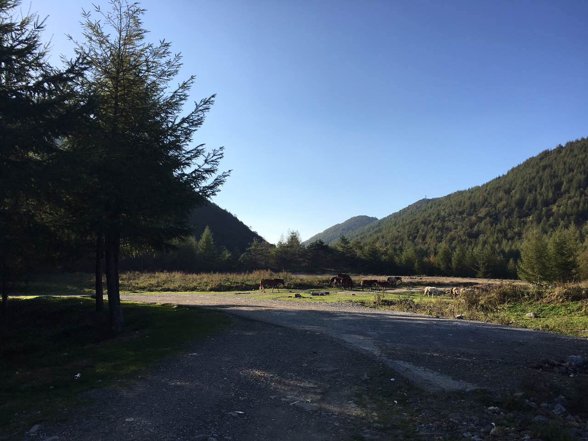

layout: post
title: "Climbing&&Hiking"
date: 2016-11-01 14:19:01
To travel hopefully is a better thing than to arrive,and the true success is to labor.
这次去雪宝山爬山远足，严格的说应该是第一次独自一人纯粹的为了旅行而外出。
这样的机会还是少，尤其十一小长假是对一个在公司上班的人来说。所以还是怀着些许愉快的心情走出家门。然而这种愉快很快被奇堵无比的交通浇灭了。然而坐在车上对我来说一直是个听歌思索的好去处，看着窗外的风景，脑海里也跟着这风景的节奏冒出一串串疑问和对这些疑问的猜测和思索，这样的思考会让人有一种冥想过后的超脱，这种感觉是闷在家里或者和朋友一起玩闹体会不到的，独处的乐趣在这种环境下才能更好的发酵。
坐了五六个小时的车终于到了开县，一个重庆边陲的小县城，网吧，妓女，车站，中学生情侣，构成了这一幅介于农村和城市之间的生活画卷，在开县逗留了一个晚上，第二天下午才一路颠簸到雪宝山下，空气是越来越好，生活的节奏也越来越慢，到了山下的小饭店已经是下午了，饭店的老板是一对中年夫妻，三个女儿都很水灵乖巧，丈夫负责把客人用摩托车送上半山腰，妻子则负责打理小饭馆和小旅馆，女儿们放假也来店里帮母亲打下手。
匆匆吃完午饭，就往山上赶，爬山的人一般都是早出晚归，无奈我到山下已经是下午了，因为不想多逗留一天，只好决定下午上山，以为一定能在太阳落山之前回来。
雪宝山并不高，却特别大，而且当天想走通根本不可能，只能到了终点再原路返回，而且我走的是公路，都是那种盘山绕圈的，路程也因此多了好几倍，硬着头皮一路忘上爬，越爬越累，越爬越冷，太阳却快要落山了，而终点还不知道在哪里，和寥寥无几的路人打听还有多远能到景色最美的地方，都没有一个准确的回答，只好硬着头皮上，心中却早已做好了在上路边度过一夜的打算。
大约走了一大半路，眼前出现一个深不见底的隧道，早听山下的人说最好不要过那个隧道，因为隧道的另一边是完全没有信号的，没有信号对于一个独自外出而且晚上还在山上逗留的人来说不是好事，心中就闪过一丝恐惧，到底要不要往前？
犹豫了一番决定试试，才往隧道里面走了几步就发现隧道里面的温度和外面差的不是一点半点，瞬间全身鸡皮疙瘩都起来了，而同时手机的光亮也被完全吞噬在这深不见底的黑暗当中，刚刚走路的脚步声也消失了，我站在那里不动，看着地上湿漉漉的地面和被车轮压扁的蛇的尸体以及西沉的落日再次陷入犹豫：万一走了一半手机没电了怎么办，万一走了半个小时隧道还没走到头怎么办，这种地方哪怕是死了估计好几天都不会有人知道。
恐惧。明明是夏天而我全身都在冒冷汗，这是真正的恐惧。
然而和这恐惧一样强烈的就是一种想一探究竟的欲望，也许这些都是本能，而选择权却在自己。
隧道越往深就越阴冷潮湿，地上各种动物的尸体就越多，而内心的焦急更多的是不知道接下来会发生什么，还有多久能到头。
一边担忧一边加快脚步，终于终于，看到了远处的一点点亮光，待走出洞口时，真是无比感谢夕阳还在西边的天空等着，山里面还没有进入黑夜，真是长长舒了一口气。
尽管仍然不知道还有多久能到终点，心情却好了很多，边走边唱，边走边看，到达目的地的时候天已经快黑了，看到一群马在哪里吃草：

原来这就是终点，还不算太晚，虽然这里的景色和我期望的有点差距，还是很开心，终于TMD到了，转了一圈拍了几张照片就往回走，回去的路就轻松多了，再次穿过隧道甚至没什么感觉，看着夕阳拄着拐杖，心里想起的确实毛主席当年翻阅崇山峻岭考察的感觉，就是这片土地，只是换了今朝。
回去的路上遇到一帮人，应该都是生意人，和他们喝了几杯，顺便蹭了一顿饭，感觉大家都很热情，心中顿时升起一种温暖，也为这次独自出行画上了句号。
如果不出去走走，有时候你会真的以为这就是全世界，然而世界远比我们知道的要大，人们的生活方式也远比我们想象的要多，当我凌晨四点起床和那帮山下的村民还有那些年轻的小姑娘小伙子一起坐汽车车穿行在山岭间奔向县城的时候，我想我和他们一样，从一个世界奔向另一个世界，他们在另一个世界为了生存努力的时候，也一定不会忘记这个世界带给他们的一切。